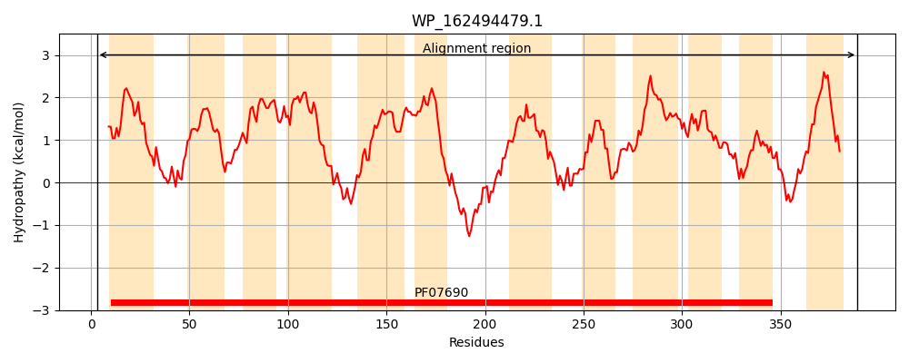
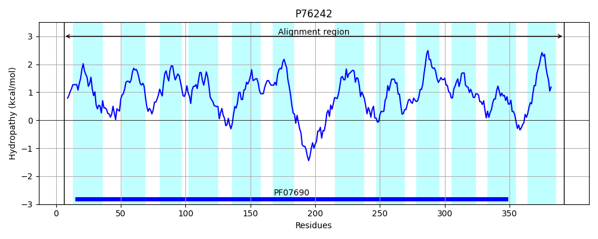

Hit Accession: P76242
Hit TCID: 2.A.1.17.3
Hit Description: gnl|BL_ORD_ID|11452 gnl|TC-DB|P76242|2.A.1.17.3 Inner membrane transport protein YeaN OS=Escherichia coli (strain K12) GN=yeaN PE=1 SV=1
Mach Len: 387
e:0.000000
Query TMS Count : 12
Hit TMS Count: 12
TMS-Overlap Score: 11.850000
Predicted Substrates:CHEBI:67135;2-nitroimidazole
BLAST Alignment:
Score: 1529 , Bit scores: 593 bits, E-value: 0.0e+00, Alignment length: 387, Percentage identity: 79
Query: 3 SSTGRRPALLIAGILLIATTLRVVFTGAAPLLDAIRSDYGLTTAQTGLLTTLPLLAFGLVSPLAAGVARRFGMERSLLLAMLLICAGIALRSLPSAALLFIGTAVIGCGIALGNVLLPGLIKRDFSQHVARMTGAYSLTMGGAAALGSALVVPVAMAGFGWRGALLLLMVFPLLAILSWLPQSRHRAEAPLTGSGAMHNRGIWRSALAWQVTLFLGINSLVYYVIIGWLPSILQSMGYSEAQAGSLHGLLQLATAAPGLAIPLILHRLRDQRGIAVLVALMCAISAAGLWLLPGLAIGWTLLFGFGSGATMILGLTFIGLRASSAHQAAALSGMAQSVGYLLAACGPPLMGKIHDANGDWHIPLLAVALISLVMAVCGALAGRDREI 389
S +G+ +LIAGIL+IATTLRV FTGAAPLLD IRS Y LTTAQTGLLTTLPLLAF L+SPLAA VARRFGMERSL A+LLICAGIA+RSLPS LLF GTAVIG GIALGNVLLPGLIKRDF VAR+TGAYSLTMG AAALGSA+VVP+A+ GFGW+GALL+LM FPLLA+ WLPQ R + A L+ S A+H RGIWRS LAWQVTLFLGINSLVYYVIIGWLP+IL S GYSEAQAGSLHGLLQLATAAPGL IPL LH ++DQRGIA VALMCA+ A GL +P AI WTLLFGFGSGATMILGLTFIGLRASSAHQAAALSGMAQSVGYLLAACGPPLMGKIHDANG+W +PL+ VA++SL+MA+ G AGRD+EI
Sbjct: 6 SLSGKNRIVLIAGILMIATTLRVTFTGAAPLLDTIRSAYSLTTAQTGLLTTLPLLAFALISPLAAPVARRFGMERSLFAALLLICAGIAIRSLPSPYLLFGGTAVIGGGIALGNVLLPGLIKRDFPHSVARLTGAYSLTMGAAAALGSAMVVPLALNGFGWQGALLMLMCFPLLALFLWLPQWRSQQHANLSTSRALHTRGIWRSPLAWQVTLFLGINSLVYYVIIGWLPAILISHGYSEAQAGSLHGLLQLATAAPGLLIPLFLHHVKDQRGIAAFVALMCAVGAVGLCFMPAHAITWTLLFGFGSGATMILGLTFIGLRASSAHQAAALSGMAQSVGYLLAACGPPLMGKIHDANGNWSVPLMGVAILSLLMAIFGLCAGRDKEI 392 | Protein Hydropathy Plots: |
|---|
|  |  |
Pairwise Alignment-Hydropathy Plot:
|
|---|
 |